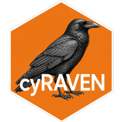

Which declared controls may serve as the unstained reference
Source:R/gating.R
reference_controls.RdA declared control is a tube kept out of the cohort statistics. That does not make it UNSTAINED, and only an unstained tube can be the reference whose 99.5th percentile sets the cut for every unimodal marker in its panel. Two kinds of declared control are stained and are refused here:
Usage
reference_controls(
candidates,
gates,
fmo_tubes = character(0),
min_cd45_pct = 5
)Arguments
- candidates
sample ids whose verdict marks them as possible references.
- gates
named list of gate results, as from
apply_gate_hierarchy().- fmo_tubes
sample ids that are FMO or minus-multiple controls.
- min_cd45_pct
passed to
staining_verdict().
Value
list(keep = sample ids usable as the reference, refused = named character vector, sample id -> reason).
Details
an FMO or minus-multiple tube, named in
fmo_for. It is the reference for the markers it leaves out and is applied to those alone. As the panel-wide reference it puts every OTHER marker's cut at the top of a stained distribution. On one sepsis cohort that set CD3, CD8, NKG2D, CD56 and CD16 cuts from a minus-multiple tube in 22 to 25 of 30 samples. The tube had been kept out of the way only because its panel fingerprint differed; once optional markers merged it into the samples' panel it became their reference.any tube whose own CD45 gate finds a separable positive population, the same test that calls a biological sample stained: a full-stain tube carried for comparison, for example.